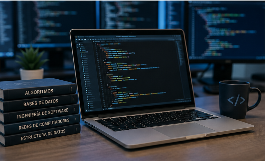

Conoce un poco más sobre mi formación,
intereses y objetivos.
¿Quién soy?
Soy estudiante de Ingeniería de Sistemas
y actualmente me encuentro fortaleciendo mis conocimientos
relacionados con la tecnología y el desarrollo de software.
Durante mi formación he tenido la oportunidad de trabajar
con diferentes herramientas y aprender conceptos relacionados
con programación, desarrollo web y bases de datos.

La formación en Ingeniería de Sistemas permite
desarrollar conocimientos para crear soluciones tecnológicas.
Mi formación
Aprendizajes principales
Mi formación académica me ha permitido conocer diferentes
áreas de la Ingeniería de Sistemas y comprender cómo la
tecnología puede utilizarse para solucionar problemas.
Entre los temas que he trabajado se encuentran
HTML,
CSS,
programación y bases de datos.
Aprender fundamentos de programación.
Desarrollar páginas web.
Trabajar con bases de datos.
Analizar problemas y buscar soluciones.
Mejorar mis habilidades mediante proyectos académicos.
Mis objetivos
Uno de mis principales objetivos es continuar desarrollando
mis conocimientos para poder crear soluciones tecnológicas
que sean útiles y que respondan a diferentes necesidades.
También quiero fortalecer mis habilidades blandas,
especialmente la comunicación, la organización y el
trabajo en equipo.
Fortalezas que quiero desarrollar
Responsabilidad
Cumplir con las actividades y compromisos
relacionados con mis proyectos.
Trabajo en equipo
Participar y colaborar con otras personas
para alcanzar objetivos comunes.
Organización
Planificar las actividades para aprovechar
mejor el tiempo disponible.
Aprendizaje
Mantener una actitud abierta para adquirir
nuevos conocimientos.
Mi visión profesional
A futuro quiero utilizar los conocimientos adquiridos
durante mi formación para participar en proyectos
relacionados con la tecnología y el desarrollo de software.
También busco alcanzar una estabilidad económica y,
mediante mi crecimiento profesional, poder apoyar
a mi familia.
¿Qué espero seguir aprendiendo?
Espero seguir fortaleciendo mis conocimientos
en programación, desarrollo web, bases de datos
y otras áreas relacionadas con los sistemas.
¿Por qué elegí Ingeniería de Sistemas?
Porque es un área que permite combinar tecnología,
análisis y resolución de problemas para desarrollar
diferentes tipos de soluciones.
Mi proceso de aprendizaje
Actualmente continúo construyendo mi formación académica
y adquiriendo experiencia mediante diferentes actividades
y proyectos.
Mi proceso de aprendizaje se desarrolla de manera
progresiva y cada proyecto representa una oportunidad
para mejorar mis conocimientos.
Este proceso forma parte de mi preparación profesional
durante el año
.